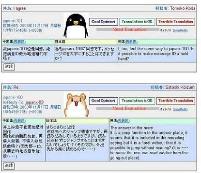

This experiment involves China and Japan and is conducted as part of Asia Broadband Project, supported by Ministry of Public Management, Home Affairs, Posts and Telecommunications (MPHPT). Targets of this experiment are 1) using multi-lingual collaboration tools to exchange opinions and transfer skills between China and Japan, 2) to co-develop Digital Beijing with the view-based city space system by using the foregoing tool and/or direct teaching.
1. Support the transfer of skills with the asynchronous multi-lingual collaboration tool
For this research, we developed an asynchronous multi-lingual collaboration environment: TransBBS V1.1, see Fig. 1) which offers document browsing and BBS functions. As the Chinese and Japanese members collaborated in this environment, we measured and evaluated the processes of mutual understanding and task performance (18 participants from Japan and 16 participants from China). By using the developed environment, we examined the effectiveness of the support function created to avoid misunderstanding and the emotional communication support function intended to improve friendly feelings toward the other participants.
A survey of the collaboration shows that the participants adjusted to the intercultural collaboration through machine translation. In the process, they tried to refine ther comments to yield messages suitable for the translation and confirm whether their meaning was correctly assessed. The emotional communication support function helped their understanding of messages and improved the level of friendship among them.

Fig. 1 Asynchronous multi-lingual collaboration tool
2. Co-development of Digital Beijing with a view-based city space system
One objective of this experiment was to transfer skills in using a view-based city space system: Town Digitizing. We developed a prototype of Digital Beijing through the collaboration of China and Japan. In one part of this collaboration, we used an asynchronous multi-lingual collaboration tool to stimulate communication between the participants. Six students of Beijing University helped in For developing this prototype. The participants from Japan went to China and provided direct technical instruction. In this experiment, we recreated the Great Wall in Badalin and some places in Beijing University. A sample of the Great Wall is shown in Fig.2.

Fig. 2. Digital Great Wall
Publications:
Tomoko Koda. Interpretation of Emotionally Expressive Characters in an Intercultural Communication. Eighth International Conference on Knowledge-based Intelligent Information & Engineering Systems(KES2004), Wellington, New Zealand, 2004. (in print)
Satoshi Koizumi and Hiroshi Ishiguro. Town Digitizing:Omnidirectional image-based Viratual Space, International Conference on Communities and Technologies 2003 Digital Cities 3 Workshop, Part 1, pp.19-30, 2003.
Contact:
Toru Ishida, Graduate School of Informatics, Kyoto University,　
ishida at i.kyoto-u.ac.jp
Tomoko Koda, Satoshi Koizumi,
Digital City Research Center, Japan Science and Technology Agency
koda at digitalcity.jst.go.jp, satoshi at digitalcity.jst.go.jp